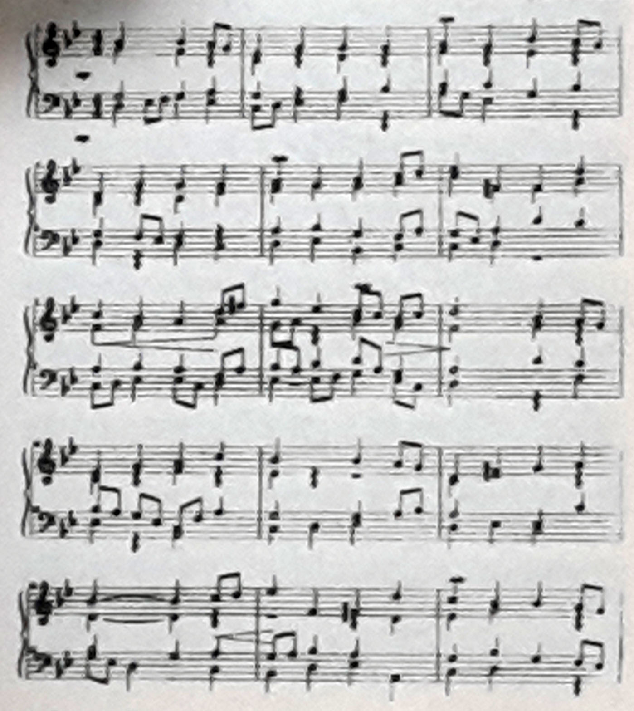

Ceset ciddi ve oturaklı bir çehreye sahip yaşlı bir adama aitti. Cesedin ve giydiği giysilerin harap haline bakılırsa, hem ceset, hem de giysileri uzun zamandır buralardaydı. Gençlerin kıkırdamaları ile teşvik edilen ceset, muhtemelen gençliğinde ettiği bir dansı yineliyordu.
Gençler yuhaladı, alay etti ve cesedin çevresinde, eski moda adımlarını taklit ederek dans etmeye başladı. Ceset onlara hiç dikkat etmiyor, çürüyen bacaklarının üstünde dans etmeye devam ediyor, yalnızca kendisinin işitebildiği bir müziğe uyarak açması bir zarafet ile, ciddiyetle hareket ediyordu.
Janet Pack
